Selection and evolution in B cells
Antibodies co-evolve with pathogens
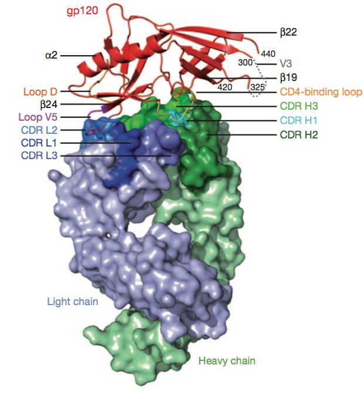B cells determine antibody diversity
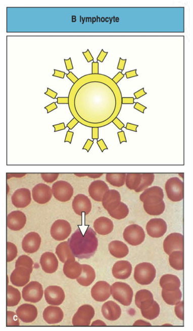Structure of a B cell receptor
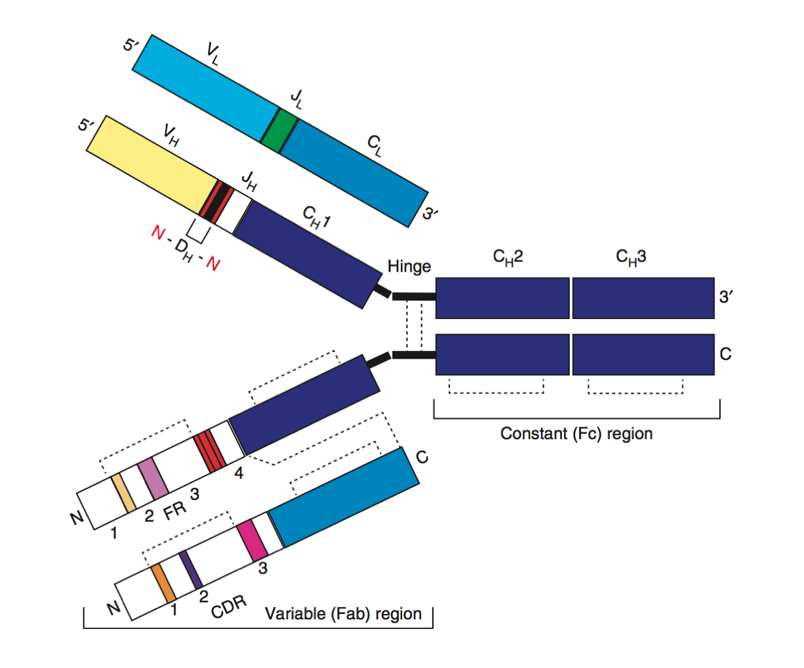Origins of B cell receptor diversity
VDJ recombination
Affinity maturation
VDJ loci
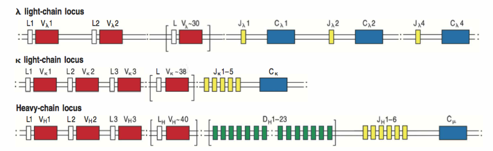VDJ recombination
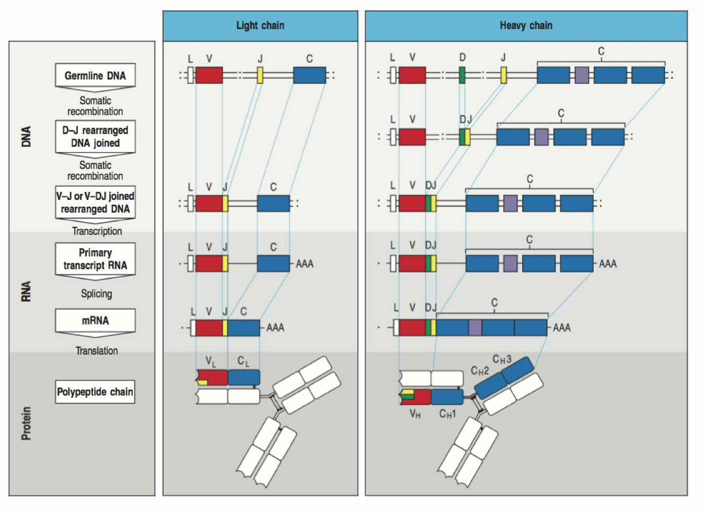Selection on naive repertoire
Stability
Autoreactivity
Germinal centers
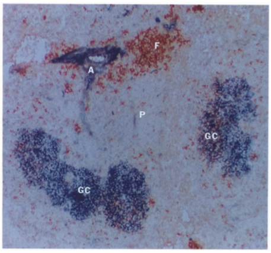Affinity maturation

AID induces somatic hypermutation
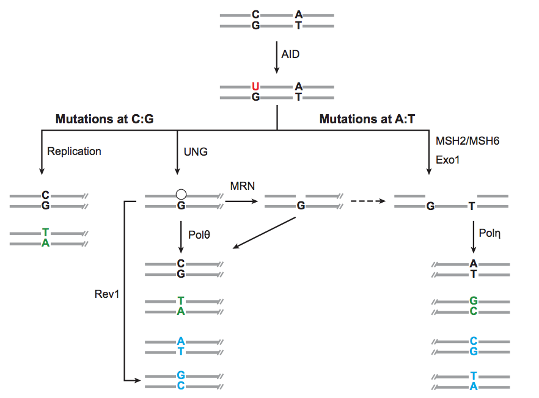GC B cells evolve
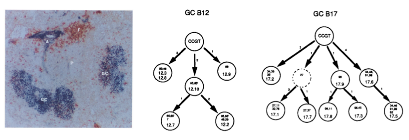Evolution in a metapopulation
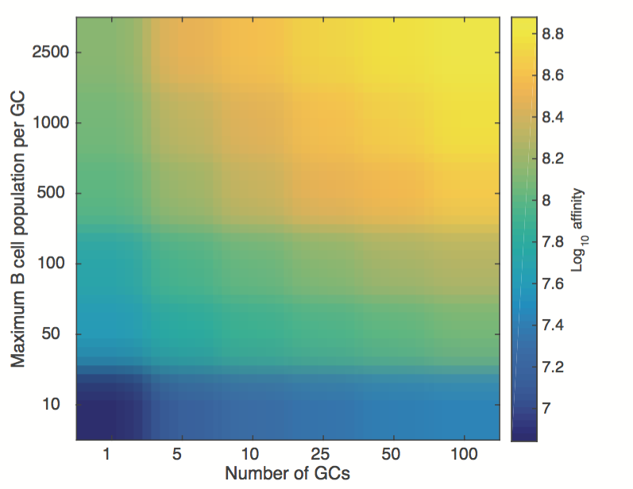Limits to affinity maturation
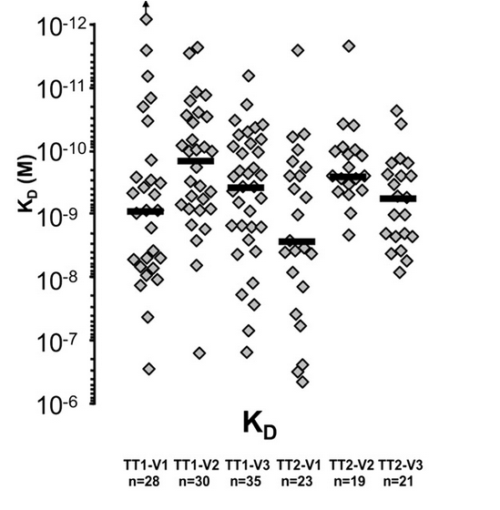Limits to somatic hypermutation
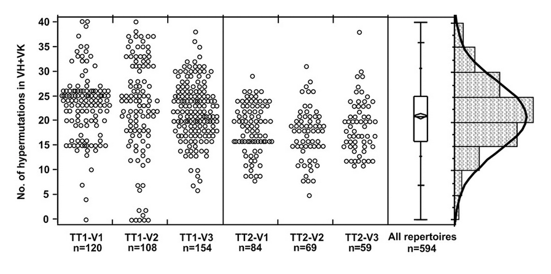Why and how does this happen?
GCs produce plasma and memory cells
Antibody feedback may limit adaptation
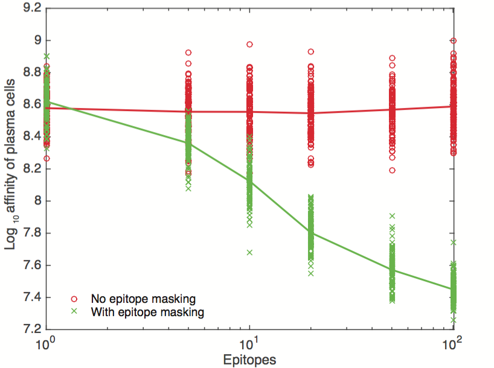...but diversify the repertoire
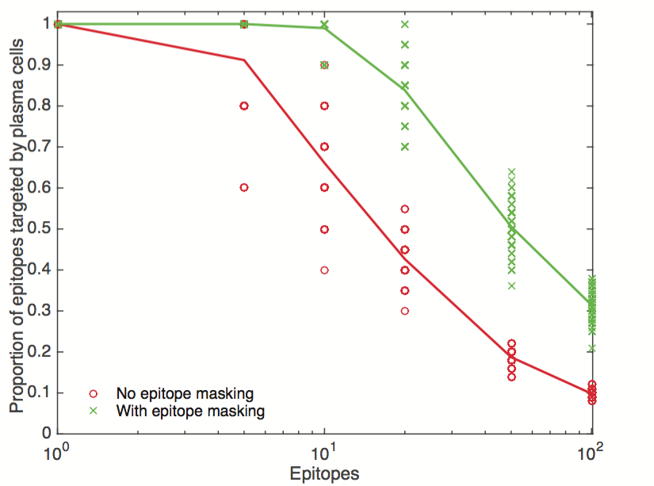Clones can be long-lived
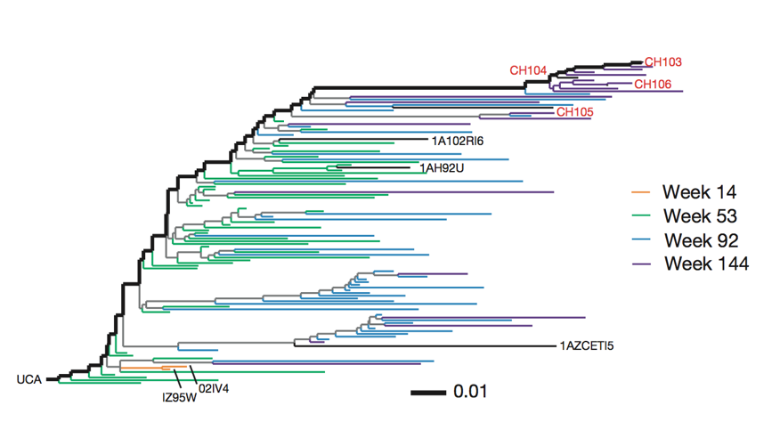Broadly neutralizing antibodies are often highly diverged
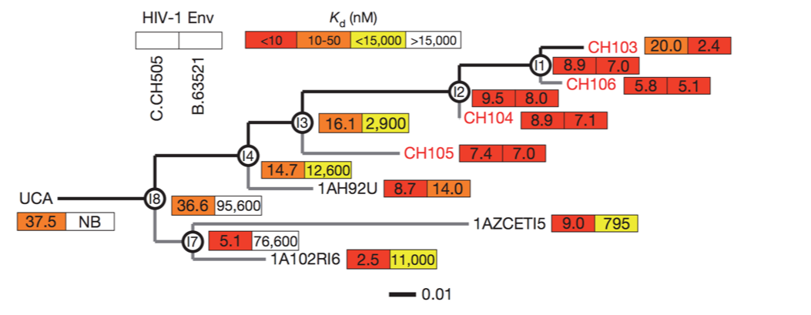Broadly neutralizing antibodies to flu slightly elusive
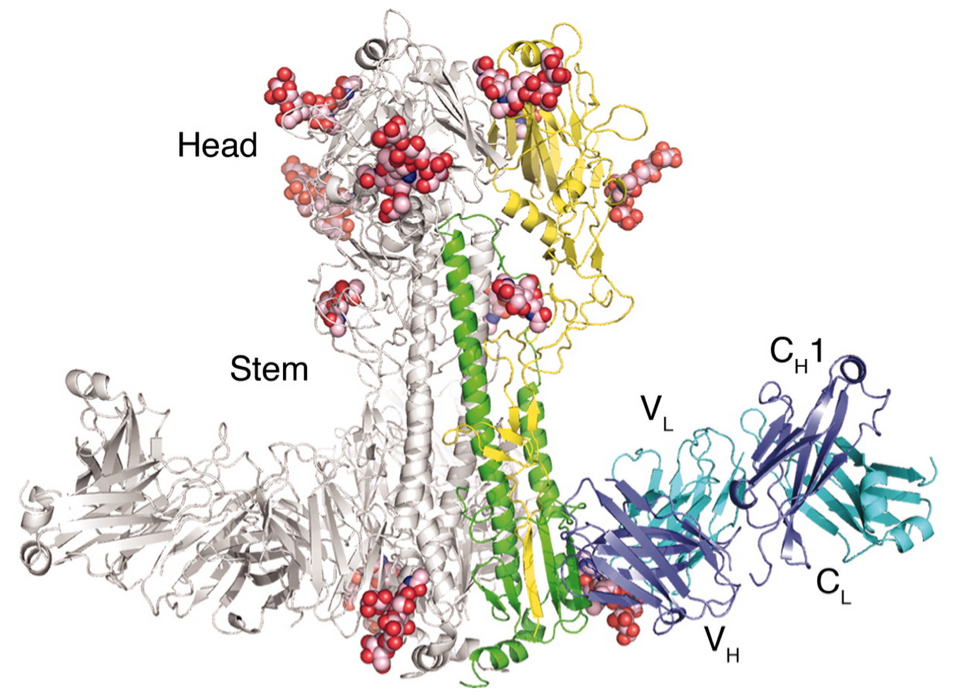Why do some people develop broadly neutralizing antibodies?
Can we induce them in everyone?
Will they dominate?
A story about a sample of people born between 1965 and 1979...
In 2013, H1N1 acquired K166Q
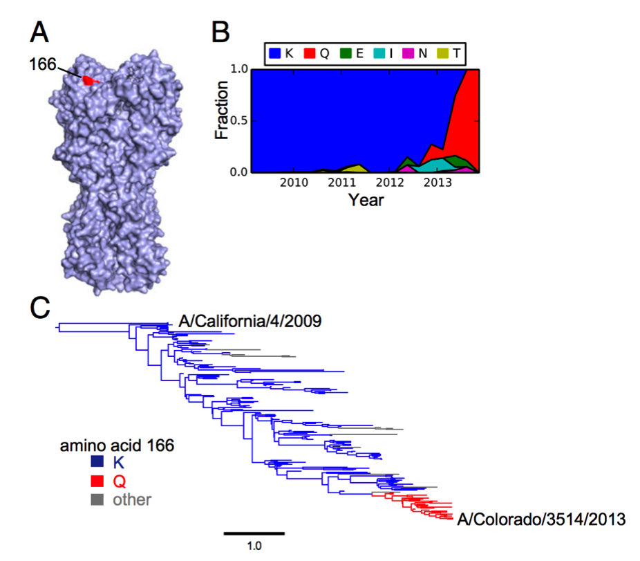Uneven recognition
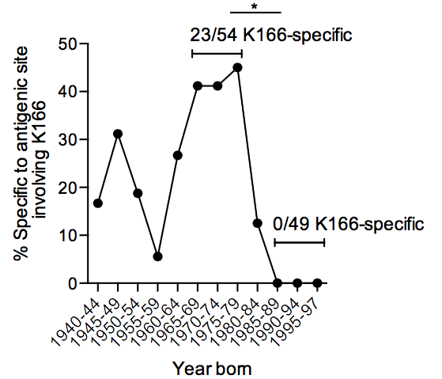Homology with childhood strain
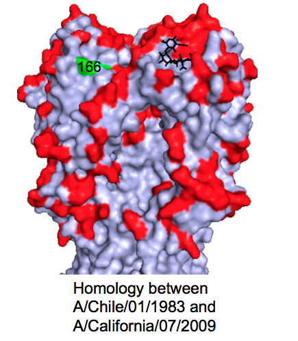Recapitulation in ferrets
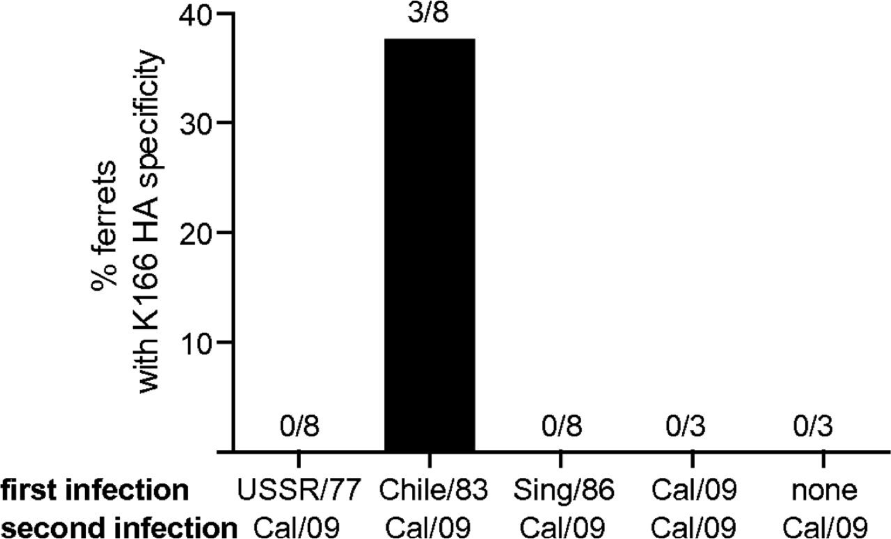Strain phenotypes depend on host
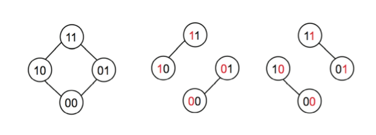What's so special about early infections?